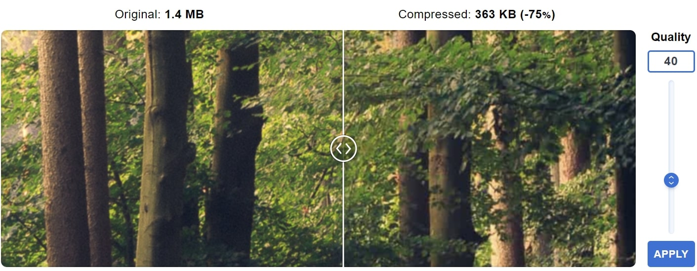

Opdracht 1
Lossy compressie verwijdert gegevens om bestandsgrootte te verminderen met enig kwaliteitsverlies. Lossless compressie verkleint bestanden zonder kwaliteitsverlies.
JPEG gebruikt lossy compressie.
PNG gebruikt lossless compressie.
GIF kan zowel lossless als lossy compressie gebruiken dit is afhankelijk van de instellingen bij het maken van het GIF-bestand.
Herhaaldelijk bewerken en opslaan in een lossy formaat, zoals JPEG, leidt tot kwaliteitsverlies, wat resulteert in verlies van details, zichtbare artefacten en kleurveranderingen bij elke bewerking. Gebruik originele, niet-lossy bestanden voor bewerkingen en sla pas op in een lossy formaat als de definitieve versie gereed is.
Opdracht 2
je kan hier zien dat als we de kwaliteit verandereren (dit voorbeeld 40) dat het bestand grootte veel verminderd van 1.4mb naar 363kb(75% kleiner) maar,
zoals je kunt zien verlies je veel sherpte van de afbeelding en ziet alles er meer wazig uit dus is dit geen goed idee als je de details nog steeds will behouden.
hier kan je zien zelf door de kwaliteit te verminderen dat de text nog steeds zeer leesbaar is dus hier zou je mogen de kwaliteit verminderen.